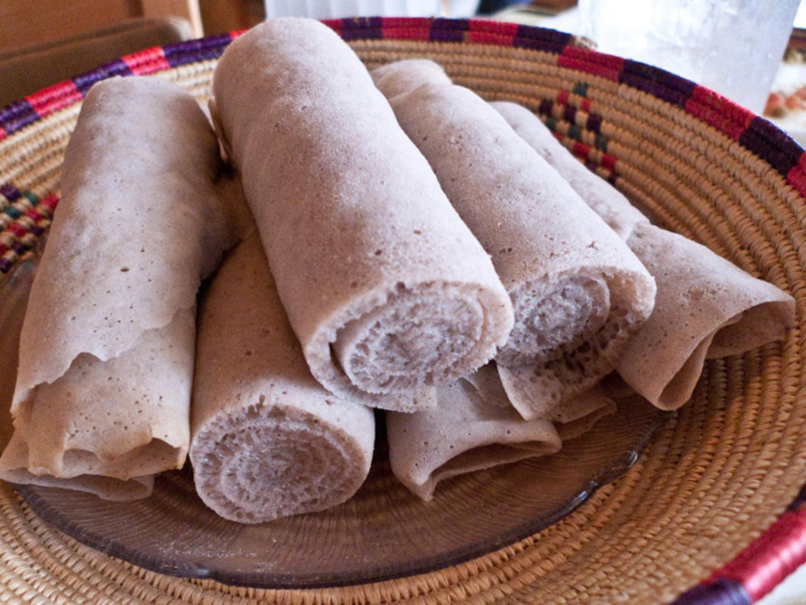

Doro Wat
Doro wat is an onion-based chicken stew from Ethiopia. Any Ethiopian or Eritrean restaurant around the world will undoubtedly serve this incredibly tasty dish. Doro wat is frequently served on top of injera with other wats and salads.
Learn More
Byaynetu(All in one plate)
It is essentially a mixed combination platter of injera topped with a variety of vegan or meat curries and vegetables available that day.
Learn More

Injera
Injera is a sour fermented flatbread with a slightly spongy texture, traditionally made out of teff flour. It is the national dish of Ethiopia and Eritrea.
Learn More